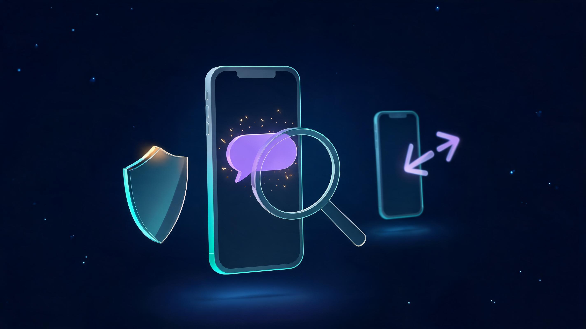
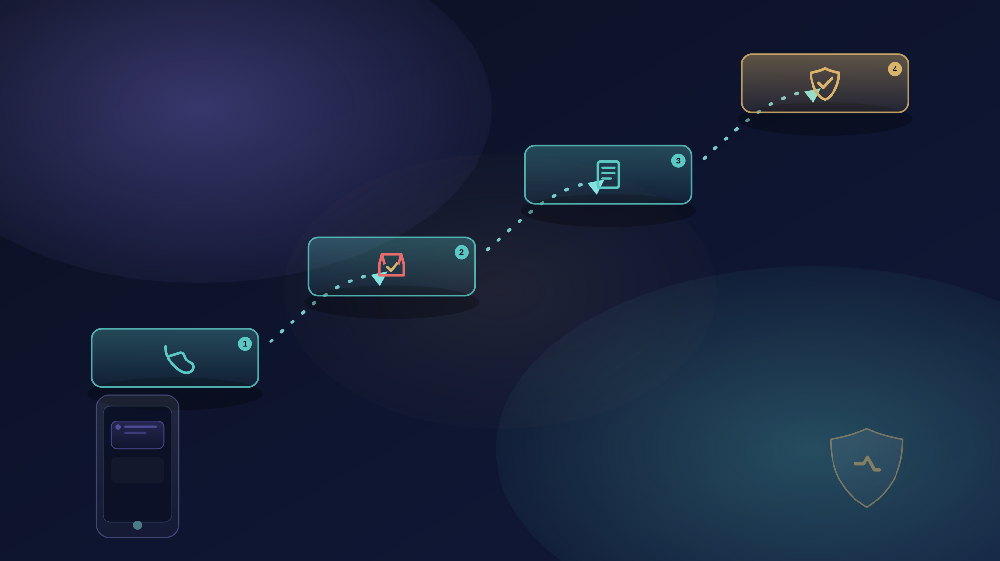
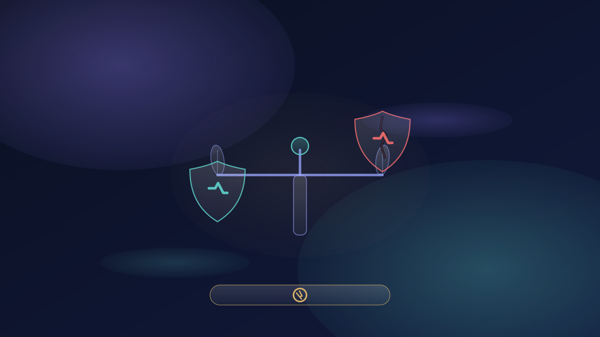
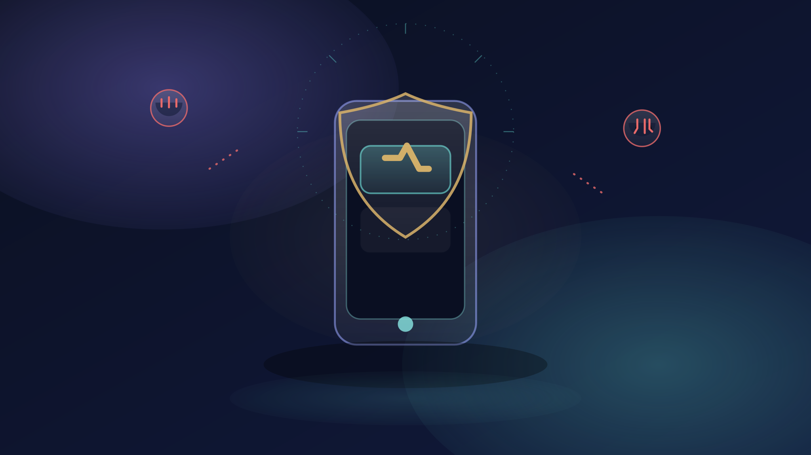

Zelle Scam Texts: How They Work + How to Get Money Back (2026)

Key takeaways
- Battery, data-usage, app-list, and forwarding checks catch most compromises in under an hour — free, with built-in tools.
- Google lists "messages you never sent" among its official malware symptoms; settings changing on their own is the next-biggest signal.
- Dial codes like *#21# show call-forwarding status only — they cannot detect spyware, and scammers misuse them as a trick.
- Android: run Play Protect, update, remove untrusted apps, then Google Security Checkup. iPhone: run Safety Check and review the App Privacy Report.
- If checks come back bad: go offline, change passwords from another device, clear forwarding (##002#), then follow the 8-step recovery order.
Suspecting your phone is hacked is unsettling — but you can check it yourself in under an hour, for free, using tools already built into Android and iPhone. This guide walks you through a 60-second quick check, the 12 warning signs that actually matter, device-by-device settings walkthroughs, what dial codes can (and cannot) tell you, and exactly what to do if a check comes back bad.
Quick answer
The fastest free check: open Settings → Battery and look for apps with unusual background drain, check Data usage for spikes you can't explain, review your app list and permissions for anything you didn't install or approve, and dial *#21# to see your call-forwarding status. Two or more red flags means it's time for the full walkthroughs below. Dial codes show forwarding status only — they cannot detect spyware, and no code can "scan" your phone.
In this guide
- The 60-second check
- 12 signs your phone is hacked (ranked by severity)
- First, rule out the innocent explanations
- Free built-in checks anyone can run
- Dial codes: what they can and can't tell you
- Android walkthrough: check your phone in Settings
- iPhone walkthrough: Safety Check & privacy audit
- The WhatsApp and camera checks most people miss
- Your phone is hacked — now what? 8 steps in order
- How to prevent phone hacking
- Frequently asked questions
The 60-second check
Before anything else, run this five-point sweep. It uses only built-in tools, takes about a minute, and catches the most common compromise signals. You don't need to install anything.
- Battery drain check. Open Settings → Battery (Android) or Settings → Battery (iPhone). Look for an app you barely use sitting near the top of background usage.
- Data usage check. Open Settings → Network & internet → Data usage on Android, or Settings → Cellular on iPhone. A spike with no change in your habits is a classic spyware signal.
- App inventory. Scroll your full app list. Anything you don't recognize — especially generic names — gets investigated before it gets trusted.
- Permissions audit. Check which apps hold camera, microphone, accessibility, and device-admin permissions. These are the four powers real spyware needs.
- Forwarding status. Dial *#21#. If call forwarding is active and you didn't set it, that's a serious signal — though it can also mean a carrier feature or an accident. Details in the dial-code section below.
One red flag is a reason to dig deeper; two or more are a reason to act today. The sections below turn each quick check into a proper investigation.
12 signs your phone is hacked (ranked by severity)
Not every glitch means a hacker. These are ordered roughly from most alarming to most ambiguous — the higher on the list, the less innocent the explanation tends to be.
- Contacts receive messages you never sent. This is on Google's own shortlist of malware symptoms: your friends report odd texts, DMs, or emails "from you." If it's happening, treat compromise as likely and move straight to the fix steps.
- Apps you didn't install appear — or apps vanish. Remote-access and spyware tools often arrive disguised as system utilities, "cleanup" tools, or update helpers. A generic-named app with no publisher trail is a red flag.
- Settings change on their own. Call forwarding enabled without you, security settings toggled off, your passcode suddenly different — configuration drift you didn't cause is exactly what remote control looks like.
- Camera or microphone indicators light up when idle. On iPhone (iOS 14 or later) a green dot means the camera is in use and an orange dot means the microphone is. On Android 12 and later, a similar indicator appears in the status bar. If they flick on with no app running, find out which app is responsible.
- You're locked out of accounts, or get password-reset emails you didn't request. Sometimes the phone is just the first domino — the attacker may be working your accounts. Handle this as both a phone problem and an account problem.
- Data usage spikes. Spyware silently uploads recordings, photos, and logs. Check monthly and per-app data figures; a malicious app often shows up near the top of mobile-data use.
- Battery drains fast and the phone runs hot at idle. Recording mic audio, capturing screen, and uploading it all burns power. Heat while the phone is untouched in your pocket is more suspicious than heat during gaming.
- Act within hours, not days. Banks can sometimes recall or freeze funds only before they leave the recipient's account — speed is the single biggest factor.
- Zelle fraud ≠ Zelle scam. An unauthorized payment (someone breached your account) is typically reimbursable. A payment you authorized under deception is treated as a scam — refundable only in specific imposter-scam cases (as of October 2026).
- The biggest 2026 pattern doesn't ask you to send money at all. "Someone accidentally sent YOU money" scams turn you into the fraudster — you forward your own cash, then the "sender" vanishes. It's one of the fastest-growing Reddit-reported patterns.
- Zelle is not FDIC-insured the way your bank account is, it is not being discontinued, and there is no phone number you can call to reverse a payment. We bust all three myths below.
- Report three ways: your bank first, then FTC, then FBI IC3. Reports create the paper trail that wins disputes.
- Call your bank NOW — but dial the number yourself. Use the number on the back of your debit card, the number inside your banking app, or the bank's official website. Never use a phone number from the text, email, or call that alerted you — that's the scammer's line. Ask for the fraud department, not general support.
- Report the Zelle payment as fraud and ask two questions: "Can you recall or freeze the funds?" and "Am I eligible for reimbursement under the imposter-scam guidelines?" Get a claim/reference number for everything.
- Report to Zelle: use the official form at zelle.com/support/report-scam. Zelle's support confirms the distinction that matters: "Certain impostor scams qualify for reimbursement."
- Report to the FTC at ReportFraud.ftc.gov and to the FBI's Internet Crime Complaint Center at ic3.gov. Takes ~7 minutes total, and your FTC report is evidence your bank cannot dismiss.
- Preserve everything: screenshots of the texts, the Zelle confirmation screen, the recipient's phone number or email, case numbers, and the names of every agent you speak to. Victims who documented timelines recovered money in multiple 2025–2026 cases covered by ABC stations.
- Change your banking password and enable app-based 2FA — especially if you clicked any link or "verified" a code with someone. If you read codes aloud or typed them anywhere, treat the phone as compromised: run our phone-compromise checklist, and if a scammer talked you into disabling 2FA, here's how to turn two-factor authentication back on safely.
- Payment was truly unauthorized (you never touched confirm — account was breached): Zelle's own support language: these "typically qualify for reimbursement." Report immediately; under Regulation E, banks generally must investigate unauthorized EFT disputes within 10 business days.
- Scam payment via bank impersonation (scammer posed as the bank's fraud team): the emerging reimbursable category. Several major banks began paying these under enforcement scrutiny in late 2025–2026; eligibility varies by bank, state, and documentation quality.
- Marketplace / accidental-deposit / romance / investment scams: still typically denied — you authorized it. Recovery hinges on speed (recall/freeze before funds move out) or a far edge case (recipient identity fraud). File anyway: reports feed enforcement, and regulators read the logs.
- Your bank's fraud department — via the card number or app. Get: claim number, agent name, next-step date.
- Zelle's report form — zelle.com/support/report-scam.
- FTC — ReportFraud.ftc.gov. Your report enters Consumer Sentinel — the database US law-enforcement partners query.
- FBI IC3 — ic3.gov. For totals over $10k or any cryptocurrency involvement, IC3 reports carry referral weight to field offices.
- CPFB complaint — if the bank stonewalls or denies with a vague reason. consumerfinance.gov/complaint.
- Evidence checklist: screenshots (texts, payment screen, recipient info), timestamps, case numbers, call logs, and a one-page timeline. Victims who walked in with this bundle got faster reversals in the cases ABC stations tracked through 2025–2026.
- Treat Zelle like cash. The official line — Zelle provides no purchase protection on authorized payments [zellepay.com]. If you wouldn't hand $500 cash to the person, don't Zelle.
- Only send to people you know and verified directly. A phone number or email can be spoofed; check the name shown in Zelle before you confirm — if the account name doesn't match your contact, stop.
- Verify out-of-band: any request that arrived by text/email/call gets confirmed by calling back on a saved number. This one habit defeats patterns #1, #4, #5, and #11.
- Never send money to "reverse" or "verify" anything. Legitimate systems never ask you to move money to fix money. Every pay-yourself, upgrade-fee, and release-fee script breaks this rule.
- Lock down the account: unique banking password, app-based 2FA (not SMS — SIM-swaps defeat texts), transaction alerts at low thresholds, and a separate low-balance account if you sell on marketplaces.
- Mind the FDIC boundary: your bank account balance is FDIC-insured; money in flight on Zelle before landing in the recipient's account is not a "deposit" — and scam losses are not insured losses. (Full myth-bust below.)
- Don't refund incoming money from strangers. Let the bank reverse it. That reflex is exactly what pattern #2 monetizes.
- Zelle Support — Report a scam / certain impostor scams qualify for reimbursement (zelle.com/support/report-scam, verified October 2026)
- Zelle — Security & protection program statement (zellepay.com/security, verified October 2026)
- Federal Trade Commission — What To Do If You Were Scammed + ReportFraud.ftc.gov (reportfraud.ftc.gov, consumer.ftc.gov)
- FBI Internet Crime Complaint Center — File a complaint (ic3.gov)
- Consumer Financial Protection Bureau — Submit a complaint (consumerfinance.gov/complaint)
- Reuters — Zelle begins refunds for imposter scams after Washington pressure + New York sues Early Warning Services over Zelle fraud (2026 coverage)
- American Banker / PaymentsDive — Chase Zelle restrictions + state enforcement tracking (2026)
- ABC station consumer coverage — fake refund-recovery ("double-dip") scams targeting prior Zelle victims (2025–2026)
Quick answer: Yes — if a scammer tricked you into sending money via Zelle, act immediately. Call your bank using the number on the back of your debit card (not any number from a call, text, or email), report the payment, and ask to file a fraud claim. Then report it at ReportFraud.ftc.gov and Zelle's official report-a-scam page. Refunds are not guaranteed — but certain imposter scams now do qualify, and the rules changed in 2026.
Zelle Scam Texts: How They Work + How to Get Money Back (2026). One text message is all it takes. "Did you request a $749 Zelle payment? Reply NO to cancel." If you reply — or call the number in that text — you're not talking to Zelle. You're talking to the scammer, and the next step is usually you sending them money "to reverse" a payment that was never real.
Zelle processed billions of dollars in peer-to-peer payments last year, and scammers love it for one brutal reason: moves are instant and, unlike a credit card, there's no purchase protection on authorized payments. Zelle itself says it plainly — the network "does not offer a protection program" for payments you authorize [zellepay.com].
But the landscape shifted in 2026. Under pressure from regulators and lawsuits — New York's attorney general sued Zelle's operator, Early Warning Services, and senators hammered bank CEOs. Major banks began reimbursing certain imposter-scam victims [Reuters]. Refunds are still case-by-case, still often denied, and still dependent on how fast you act. This guide shows you every pattern we're seeing in 2026, exactly what qualifies for money back, and the order of operations that gives you the best shot.
Key takeaways
The 60-second emergency checklist (if you just got scammed)
If you're reading this from a fresh victim's phone, skip everything else and start here:

How Zelle scams actually work: fraud vs. scam (the difference that decides your refund)
Before the patterns, you need the one distinction banks use to approve or deny every claim:
Unauthorized payments (true fraud): someone gained access to your account — via stolen password, SIM-swap, or a device compromise — and sent money without your involvement. Zelle's own guidance says these "typically qualify for reimbursement."
Authorized payments (scams): you entered the password, tapped confirm, sent the money — because a scammer deceived you. By default, these are treated as your responsibility, like handing cash to a stranger.
That second category is where victims get denied, and it's why scammers engineer situations where you press the button. The 2026 exception: several major banks now treat certain bank-impersonation scams — where the scammer posed as the bank's fraud team and walked you through "verifying" a reversed payment — as reimbursable, following regulatory pressure. Chase, Wells Fargo, Bank of America and others are expanding eligibility case-by-case; policies differ by bank and by state enforcement actions.
Mark every claim: was the payment truly unauthorized (never touched confirm), or authorized under deception (imposter walked you through it)? Your reimbursement path depends entirely on this line.

The 12 Zelle scam patterns to know in 2026
These are the patterns driving complaints right now — ranked roughly by how often they hit real victims in 2026 reports, user forums, and state AG filings. Note how many never mention "Zelle" at all in the first message.
1. The "did you authorize this payment?" text
The hook: "Zelle Alert: A payment of $749.99 is pending. Did YOU authorize this? Reply NO to cancel or call support." The number looks like a short code; brands look real.
The pivot: Reply or call, and a "Zelle's fraud team" agent says your account is compromised. To "secure your money," they need you to Zelle it to yourself — to a special "safety account." That account is theirs. This is the classic pay-yourself scam the FTC and banks consistently rank among the costliest [FTC].
The tell: Zelle never asks you to send money to reverse a payment. No legitimate cancellation works by replying to a text — the same playbook powers PayPal scam emails if you use that platform too.
2. "Someone sent YOU money" — the reverse scam (fastest-growing 2026 pattern)
The hook: a stranger Zelles you $300–$900 "by mistake" — sometimes several payments. Then: "Hi so sorry, wrong number! Please send it back."
The trap: you refund them from your balance. Days later the original payments bounce — because they were made with a stolen card or hijacked account, or funded by a fraudulent check through a linked account. The bank claws back every dollar of the incoming money, and your outgoing refund is simply gone. In the cruelest variant, the scammer threatens to report you for their "stolen" funds.
The tell: never refund money you didn't personally detect as yours. If a stranger sends money, don't touch it — report it to your bank and let them reverse it. Whatever you do, don't refund before checking with the bank.

3. Facebook Marketplace + fake Zelle receipt screenshots
The hook: marketplace buyer is "very interested," wants to pay instantly via Zelle for the couch, the iPhone, the puppy. Then sends a screenshot: "Zelle — payment sent, $450." Money "on hold" until you "upgrade to a business account" and pay a refundable fee with Zelle gift cards or a direct transfer.
The trap: no screenshot is a payment. The "business account fee" is pure fiction — Zelle charges no upgrade fee for anyone, and the buyer’s payment never landed. The screenshot is often literally stolen from a real Zelle confirmation or doctored: the "pending funds" don't exist in any banking system. Bank of America and Wells Fargo both publish marketplace-scam warnings for this exact flow [zellepay.com].
The tell: open your banking app and check your balance — actually check. Zelle has no "business upgrade." A buyer who won't move to in-person cash-inspect deals is flipping to the next mark.
4. Bank-impersonation calls ("ignore the fraud alerts")
The hook: caller ID shows your actual bank. "We've detected fraud on your account — you'll get Zelle confirmation texts; ignore them, they're the fraudster trying to stop our fix." Then they walk you through "reversing" the fake charges — which means sending real money to the scammer.
The trap: spoofed caller ID is trivial in 2026, and AI voice-cloning makes "bank agents" sound like your real branch. The confirmation texts you're told to ignore are usually the real bank flagging outgoing fraud — you're being coached through authorizing your own robbery.
The tell: hang up and dial your bank's official number (the card's back, or the app). Real banks never ask you to move money to "safe" accounts, and never ask you to ignore their own fraud alerts.
5. The AI voice-clone "family emergency"
The hook: a call from your child, parent, or close friend — panicked, crying, needs bail money or hospital deposit right now via Zelle. The voice is theirs. Banks reported a surge in cloned-voice cases through 2025–2026 as consumer-grade voice cloning got cheap — our guide to AI voice-clone scams shows how the cloning pipeline works end to end.
The trap: three seconds of audio from any social video is enough to build a convincing clone. Urgency is engineered — no time to verify.
The tell: hang up and call back on the number you have saved. Agree on a family safe-word today. Real emergencies survive a 30-second verification call.
6. The double-dip: fake refund-recovery agents
The hook: you lost money already. Days later, a website, DM, or call: "We recovered $2.3M for Zelle fraud victims this year. We take 10% only after you're paid." Some even pose as FTC or FDIC "refund departments."
The trap: they're targeting victims' lists sold between scam rings. "Recovery" usually means upfront "processing fees," then silence — plus they may need your banking login "to deposit the refund," which drains you again. The FTC has warned repeatedly: no government agency charges a fee to return your money, and the FTC does not issue refunds via phone agents.
The tell: legitimate recovery is free: your bank, the CFPB complaint portal, or a real lawyer. Anyone cold-contacting scam victims is a scammer — delete.
7. Account-upgrade / verification-fee scams
Cousin of #3: "Your Zelle account needs a $199 verification deposit to unlock business limits" or "pay the release fee to unhold your transfer." Zelle has no upgrade fees, no holds requiring payment, no verification deposits. Any fee-request string attached to money you're owed is the scam fee — the "owed" money doesn't exist.
8. Rental & concert-ticket scams
"Apartment still available, Zelle the deposit to hold it." "4 Taylor Swift tickets, Zelle me and I'll transfer tonight." Deposits vanish; tickets never come; the "landlord" was never there. Only pay for rentals and events after verified, in-person handovers — or use platforms with built-in protection instead of instant P2P rails.
9. Romance-to-Zelle pipeline
Weeks of warm chat on dating apps, then a crisis: can't access accounts abroad, needs cash via Zelle "just this once." Zelle's speed and non-refundability after "authorization" is why romance scammers migrate victims to it. Mixed-content payments and never-send-money-to-someone-you-haven't-met rules apply; if you've already sent, treat it as unrecoverable unless reported within hours.
10. Investment & crypto-offramp scams
"Double your money — deposit via Zelle, withdraw at 20% weekly." Early "withdrawals" (fake dashboard credits) bait bigger deposits. Zelle explicitly is not an investment rail, and FOMO screenshots arefabricated dashboards. Regulators flagged payment-app funding of "pig-butchering" as a top 2026 consumer threat — see how the crypto side works in our Coinbase scam-text breakdown.
11. Charity & disaster-relief scams
After storms, wildfires, or viral tragedies: "Donate via Zelle, 100% goes to victims." Verified charities never ask for P2P-app donations — they use registered processors you can audit. New York City police issued warnings after a Central Park donation-scam wave hit visitors via QR-coded "donation" stands.
12. Employment & side-hustle scams
"Earn $400/week handling payments — we'll Zelle you funds, you forward to vendors, keep 8%." You're the money mule; incoming funds are stolen, outgoing is your account. The job offers velocity-of-trust: same-day "hiring," no interview, check-cashing "vendor payments." By the clawback hits, you've forwarded thousands.
Can you get money back from Zelle? The honest 2026 answer
Short version: unauthorized payments — usually yes. Scam payments — usually no, except specific imposter-scam cases, and except banks that voluntarily expanded reimbursements under 2026 regulatory pressure. Here's the decision tree:
If the bank denies you: ask for the denial in writing with the exact reason code, then file a free complaint at the CFPB. CFPB complaints force a bank response within 15 days, and multiple 2025–2026 denials reversed after CFPB escalation. Keep every case number.
Policy note: This section reflects refund policies as of October 2026, including the imposter-scam reimbursement programs launched after regulatory and state-level pressure. Check your specific bank's current policy: these programs are expanding and vary by institution.
How to report a Zelle scam (step by step)
How to protect yourself (prevention that actually works)

FAQ: Zelle scam questions (answered)
What is Zelle's contact information?
Zelle doesn't publish a single consumer phone number — support runs through your bank, because Zelle is a network banks embed in their own apps. To reach real support: open your banking app and use its chat/support, call the number on your debit card, or use the official form at zelle.com/support/report-scam. A "Zelle support agent" who called you first was never Zelle — that's pattern #4.
Why is Zelle being discontinued?
It isn't. This rumor goes viral every few months on X and TikTok. What actually happened: Zelle's standalone app was retired in early 2025 because almost everyone sends Zelle payments inside their banking apps now — the service is fully alive and continues in 150 million+ US bank accounts. The second rumor-wave blended it with the 2026 refund lawsuits: lawsuits against Early Warning Services are about reimbursement policy, not shutdown. If you can still open your bank's app, you can still Zelle.
Is Zelle FDIC insured?
Not the way people assume — and the distinction matters. Money sitting in your bank account (including funds received via Zelle) is FDIC-insured up to $250,000 like any balance. But Zelle is a payment network, not a bank or deposit account: money in transit and money you sent to a scammer are not insured losses. FDIC insurance protects against bank failure, not fraud, and there's no federal pot that reimburses scam victims. Zelle also has no purchase-protection program for authorized payments [zellepay.com].
What happens if Zelle money is sent to the wrong number?
Act fast: money isn't "yours" to claw back unilaterally, but banks can request a recall and contact the receiving institution. Your steps: call your bank immediately (card-back number), report the mis-sent payment, and ask them to initiate a recall. If the recipient agrees to return it, banks can process it; if they refuse and drain the funds, recovery depends on their cooperation and account status. Never let a third party — or a "Zelle agent" — handle the recall for you; that's always a scam. Also note: if a stranger sent YOU money and demands it back, don't reverse anything yourself — report to your bank (pattern #2: the incoming funds are often stolen and will be clawed back anyway).
Someone sent me money by accident — should I send it back?
No — not on your own. Contact your bank, report the unexpected deposit, and let the bank reverse it or advise you. In the reverse-scam pattern (#2), the incoming money is usually stolen — sent from a hijacked account or funded by a fake check — and the bank will claw it back weeks later. Your "refund" of your own balance is what the scammer actually collects. Victims on r/Scams report this pattern constantly in 2026; the safe move always is: don't touch it, don't refund, report.
How long does a Zelle refund take?
For unauthorized-payment fraud claims, banks generally must investigate within 10 business days under Regulation E — and provisional credit can come sooner. Imposer-scam reimbursement cases (the 2026 exception category) vary widely: near-instant when funds are still frozen in the recipient's account, to weeks when the case goes through fraud-review committees. If funds already cleared to the scammer's account and got withdrawn, recovery odds drop sharply — which is why hour-one matters more than anything else. Denied? Ask for the written reason code and escalate via CFPB.
Is a Zelle payment screenshot proof someone paid me?
No. Screenshots are trivially faked or stolen from genuine confirmations — marketplace scammers (pattern #3) build entire rackets on "payment pending, just pay the release fee." The only proof that exists is your own banking app showing the money settled in your available balance. Check the app yourself, every time, before you ship anything or pay any fee.
Is Venmo any safer than Zelle?
Different risks, same core failure mode: both move real money instantly, and both offer effectively no protection when you authorize a payment to a scammer. Venmo has a feed/privacy angle and longer customer-dispute channels; Zelle integrates directly with banks and is harder to reverse because it clears through the banking system fast. Neither is FDIC-insured as a payment rail. For marketplace sales and payments to strangers, cards and platforms with real buyer protection beat both. If you're comparing apps, the marketplace patterns above apply to Venmo the same way.
Can my bank refuse to refund me?
Yes — and often legitimately, if you authorized the payment. But refusals must be for real investigated reasons: unauthorized-payment claims can't be denied without investigation, and Regulation E sets timelines. If you get a generic "you authorized it" denial on what was actually an account-takeover (true fraud), that's appealable: request the written reason code, submit your evidence timeline, and file a CFPB complaint. Multiple 2025–2026 victims reversed denials this way — especially in states where AGs are actively suing Zelle's operator.
Is Zelle safe for business payments?
For getting paid by real customers you trust — yes, it's fast and free. For receiving payments from strangers who "want to hire you" or "buy your item" — dangerous as the marketplace patterns show, and more so now that AI can fake receipts, voices, and caller ID. Zelle's terms are built for personal transfers between people who know each other; small businesses should route strangers through processors that dispute-solutions, accept card chargebacks, and hold funds. If someone insists on Zelle for a first deal with you, treat it as a red flag equal to gift cards or wire transfers.
📚 Sources & Citations (8)
Keep exploring: If this guide helped, our step-by-step on spotting PayPal scam emails and the Coinbase scam-text breakdown cover the other big payment-scam families. For the AI side of the threat: AI voice-clone scams. If a scammer talked you into disabling 2FA: turn two-factor authentication back on — and run the phone-hacked checklist.